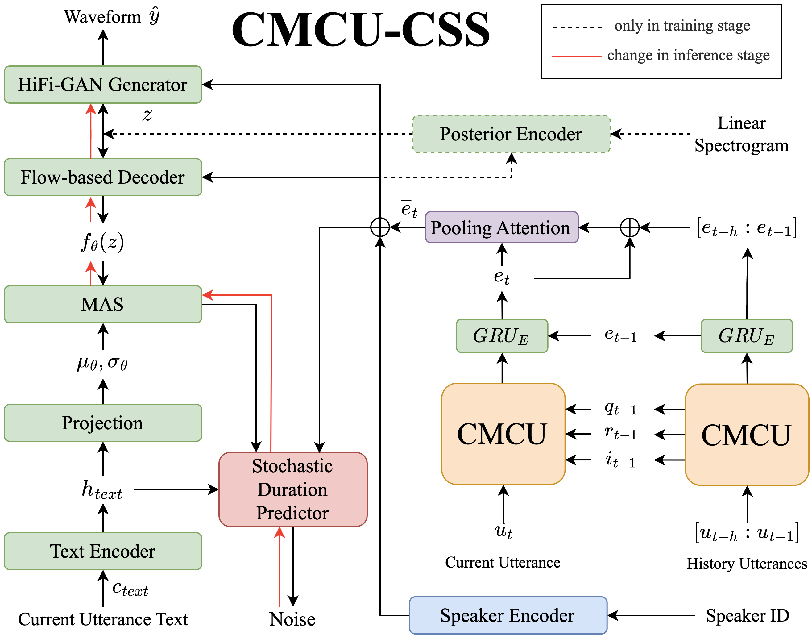
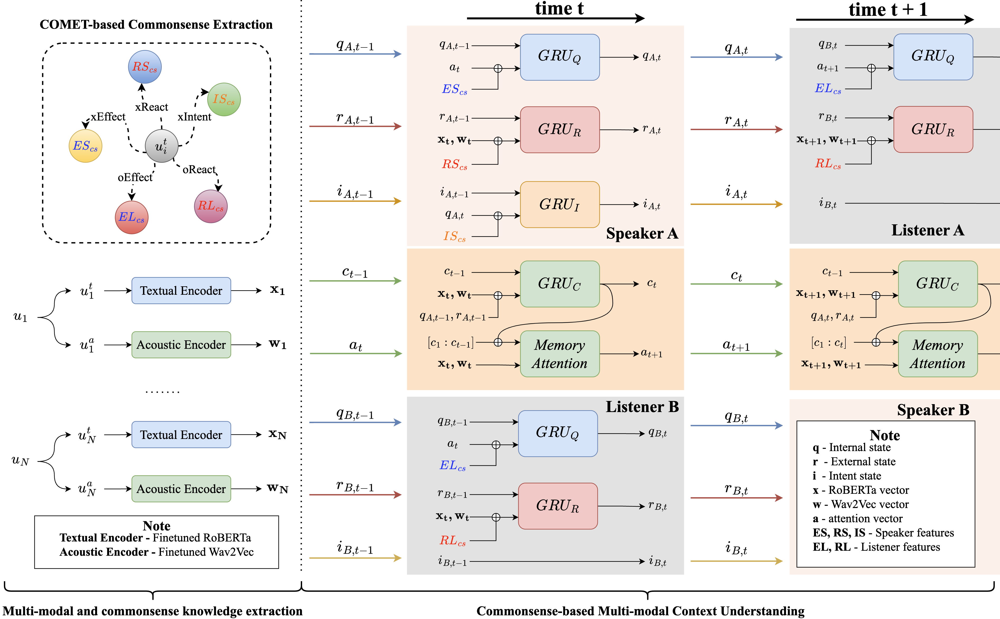

CMCU-CSS: Enhancing Naturalness via Commonsense-based Multi-modal Context Understanding in Conversational Speech Synthesis
Abstract
Conversational Speech Synthesis (CSS) aims to produce speech appropriate for oral communication. However, the complexity of context dependency modeling poses significant challenges in the field of CSS, especially the mutual psychological influence between interlocutors. Previous studies have verified that prior commonsense knowledge helps machines understand subtle psychological information (e.g., feelings and intentions) in spontaneous oral dialogues. Therefore, to enhance context understanding and improve the naturalness of synthesized speech, we propose a novel conversational speech synthesis system (CMCU-CSS) that incorporates the Commonsense-based Multi-modal Context Understanding (CMCU) module to model the dynamic emotional interaction among interlocutors. Specifically, we first utilize three implicit states (intent state, internal state and external state) in CMCU to model the context dependency between inter/intra speakers with the help of commonsense knowledge. Furthermore, we infer emotion vectors from the fusion of these implicit states and multi-modal features to enhance the emotion discriminability of synthesized speech. This is the first attempt to combine commonsense knowledge with conversational speech synthesis, and its effect in terms of emotion discriminability of synthetic speech is evaluated by emotion recognition in conversation task. The results of subjective and objective evaluations demonstrate that the CMCU-CSS model achieves more natural speech with context-appropriate emotion and is equipped with the best emotion discriminability, surpassing that of other conversational speech synthesis models.
Contents
Compared Models
To verify the effectiveness of our proposed method in conversational speech synthesis, we compare different approaches with different historical context modeling, and they all employ VITS as synthesis backbone.
- Groundtruth: denoted as "M0".
- No Context Modeling: vanilla VITS which has no additional conditional input except phoneme sequences and speaker information, denoted as "M1".
- GRU-based: The model is denoted as "M2", where textual context embedding is compassed by a uni-directional gated recurrent unit (GRU) to model context dependency.
- Commonsense-based Context Modeling: This method use context modeling similar to CMCU, except it only adopts textual feature and ignores acoustic feature in context dependency modeling, denoted as "M3".
- CMCU-based Context Modeling (Proposed): Our proposed method denoted as "M4".
Model Architecture


As shown in Fig.1, the whole conversational speech synthesis framework CMCU-CSS that we propose has six parts: 1) CMCU module, 2) text encoder, 3) posterior encoder, 4) flow-based decoder, 5) stochastic duration predictor, and 6) HiFi-GAN generator. Moreover, Fig.2 illustrates details of multi-modal features and commonsense knowledge extraction in our framework.
Evaluation on DailyTalk Dataset
Sample 6_0_d2187
history
B[neu]: No, there's no such section. The dairy section is where you'll find milk and cheese.
A[neu]: What's Condiments?
B[neu]: That's where you'll find things like salt and pepper.
A[neu]: Oh, I see.
B[neu]: Umm... Let's go to aisle four to pick up some pasta for tonight.
A[hap]: Great! Pasta for dinner.
| M0 | M1 | M2 | M3 | M4 |
|---|---|---|---|---|
Sample 8_1_d9
history
A[neu]: Poor boy! But don't worry. Here are two pills made in Germany. It's really effective. He will be just fine.
B[neu]: Thank you so much.
A[neu]: Take some with you next time, just in case.
B[neu]: Sorry to interrupt, but my brother is still sleeping.
A[neu]: You mean the boy who felt carsick just now?
B[neu]: Yes. It's so strange that he slept all the time after taking the pills.
| M0 | M1 | M2 | M3 | M4 |
|---|---|---|---|---|
Sample 10_0_d1710
history
B[neu]: We can't put up with it any more.
A[neu]: We'll play the CD loud, is that all right?
B[neu]: Umm I don't think so.
A[neu]: What should we do?
B[neu]: Why don't we call them?
A[neu]: Good idea.
| M0 | M1 | M2 | M3 | M4 |
|---|---|---|---|---|
Sample 12_0_d1078
history
B[neu]: Well, I'm not so sure. Most of my make-up is brown.
A[neu]: Why don't you wear purple eye shadow for a change? We also have lipstick to go with it.
B[neu]: Can I try it?
A[neu]: Sure. Are you wearing any make-up?
B[neu]: No.
A[neu]: Have a seat, please. Now, here is the mirror. How do you like it?
| M0 | M1 | M2 | M3 | M4 |
|---|---|---|---|---|
Sample 5_0_d1460
history
B[neu]: May I help you?
A[neu]: Yes. I'm looking for some perfume. Do you have perfumes with a light scent?
B[neu]: How about this one? It smells like green tea and is our best seller. Try it.
A[neu]: It does smell good, How much is it?
B[neu]: It goes for fourty dollars.
A[neu]: OK. I'll take this one.
| M0 | M1 | M2 | M3 | M4 |
|---|---|---|---|---|
Sample 6_0_d1676
history
B[hap]: Sure did. It's a beauty. Where do you want it?
A[hap]: Let's put it over there.
B[hap]: Let's go to work. We want to have the tree ready to light up by evening.
A[hap]: Let's string the lights first. Then we won't have to mess up the decorations.
B[hap]: Hand me some globes and paper flowers, I'll put them on these top branches.
A[hap]: There, umm... we're about done.
| M0 | M1 | M2 | M3 | M4 |
|---|---|---|---|---|
Sample 6_0_d2321
history
B[neu]: I'd like to buy a toy car for my son.
A[neu]: How about this one?
B[neu]: It looks nice. How much is it?
A[neu]: They're three-hundred dollars.
B[neu]: Oh, I'm afraid it's too expensive. Can you show me something cheaper?
A[neu]: OK, umm, this one is one hundred and twenty. It's the cheapest here.
| M0 | M1 | M2 | M3 | M4 |
|---|---|---|---|---|
Sample 5_0_d739
history
B[neu]: Why are there still so many people overweight despite the current fitness craze?
A[neu]: Well, there are certain factors that effect people's size and weight.
B[neu]: What are they?
A[neu]: Umm one study said that low-income groups have a higher percentage of over-weight people than higher income families.
B[neu]: Why?
A[neu]: The survey said that the low, income groups eat more junk food on a daily basis.
| M0 | M1 | M2 | M3 | M4 |
|---|---|---|---|---|
Sample 9_1_d1066
history
A[neu]: How much does it cost?
B[neu]: Fifty dollars.
A[surp]: Fifty dollars. That's too much.
B[neu]: How about this one? It's on sale for only thirty five dollars.
A[neu]: I don't like that one.
B[neu]: How about the one next to the black gloves? It's very similar to the one you like.
| M0 | M1 | M2 | M3 | M4 |
|---|---|---|---|---|
Sample 14_0_d2344
history
B[hap]: Really? I bought a same one last week. It's surprising that there is something we both like. Well, what do you think of these ceramic cups?
A[neu]: Come on. They look so cheap. Something else, please.
B[neu]: What about this picture? I think Benjamin would like it.
A[neu]: Don't underestimate his taste. I don't think he'd like it.
B[neu]: Don't be so sure. He loves the vase I bought here last week.
A[neu]: Yeah. Well, anyway, it's up to you. But I can tell that you come here often.
| M0 | M1 | M2 | M3 | M4 |
|---|---|---|---|---|
Sample 5_0_d1478
history
B[neu]: I'm so hungry! I haven't late eaten all day!
A[neu]: Take your mind off it. Look, Crys. This magazine is on China's top ten beauties!
B[neu]: They're all so thin! Her cheekbones are great.
A[neu]: She doesn't have an ounce of fat on her face.
B[neu]: Umm the mag says she's one sixty five centimeters tall and thirty eight kilos. If only we could be that thin then...
A[neu]: Not even drinking milk for one month would get us like that.
| M0 | M1 | M2 | M3 | M4 |
|---|---|---|---|---|
Sample 6_0_d1730
history
B[hap]: Thanks to you. I'm totally pumped up.
A[hap]: Umm so you are happy that you made the decision to join us.
B[neu]: I surely am. But still there is one single problem.
A[neu]: What's that?
B[neu]: I eat more and more these days. And it puts even more weight on me.
A[neu]: It's not good to start with too much work-out at the beginning. How about trying something else?
| M0 | M1 | M2 | M3 | M4 |
|---|---|---|---|---|
Sample 7_1_d563
history
A[neu]: But I can't find anything in my size here.
B[neu]: Umm you're small, but you're not a child.
A[ang]: Well, there's nothing I can do about my height!
B[neu]: There's a petite section that you can check out.
A[neu]: What's in the petite section?
B[neu]: It has clothes in small sizes for small women.
| M0 | M1 | M2 | M3 | M4 |
|---|---|---|---|---|
Sample 12_0_d378
history
B[hap]: Definitely. rich or poor, dogs always love their masters.
A[neu]: How about cats? Have you ever had one for a pet?
B[neu]: I had one a few months ago, but she ended up running away.
A[neu]: How did that happen?
B[neu]: She left through a window that was open one night and never returned.
A[neu]: You must have been devastated!
| M0 | M1 | M2 | M3 | M4 |
|---|---|---|---|---|
Sample 5_1_d986
history
A[neu]: Mary, how was your date with John?
B[neu]: It's OK. It seems we have a lot in common.
A[neu]: Oh, really. That is great news. What does he look like?
B[neu]: He is tall and slim, fair-haired.
A[neu]: Sounds like he is pretty cute. What do you think of him?
B[neu]: He is a nice guy and very considerate. I was impressed with how smart he was and he has a great sense of humor.
| M0 | M1 | M2 | M3 | M4 |
|---|---|---|---|---|
Sample 7_0_d147
history
B[neu]: Won't you watch TV?
A[neu]: What's on TV tonight \? Is there a football match?
B[neu]: The TV station will air the World Cup football match alive at eight:thirty.
A[surp]: Really? Who will play?
B[neu]: Umm the Brazilian team versus the American team. Don't miss it.
A[neu]: That's cool. I'll watch it.
| M0 | M1 | M2 | M3 | M4 |
|---|---|---|---|---|
Sample 7_0_d1171
history
B[neu]: Driver, can you please speed up? I m afraid I might miss the flight.
A[sad]: I'm sorry, madam, there’s a limit to the speed.
B[ang]: Damn it! I think I'm going to miss the plane.
A[neu]: I'm sorry about that. What’s your flight time?
B[neu]: At two.
A[neu]: Don’t worry, madam. Umm I guess we should get there not later than one:thirty p.m.
| M0 | M1 | M2 | M3 | M4 |
|---|---|---|---|---|
Sample 13_0_d2401
history
B[neu]: We deal with kid's clothing, women's clothing, and men's clothing. You name it we deal with it.
A[neu]: That's nice. They provided us with convenient choice.
B[neu]: As for the regular customers, we have some favorable terms for them.
A[neu]: I'd like to hear that.
B[neu]: For the substantial regular customers, we offer five percent commissions.
A[hap]: That sounds attractive, all right, how about that we sign a one year contract?
| M0 | M1 | M2 | M3 | M4 |
|---|---|---|---|---|
Sample 6_0_d1521
history
B[neu]: No, thanks, I'll pass. It looks very tempting though.
A[neu]: I thought strawberry cake with cream cheese frosting was your favorite?
B[neu]: It is. I'm on a diet and strawberry cream cheese cake is not on it.
A[neu]: A diet? What for? You are in great shape.
B[neu]: I went to the doctor the other day. My cholesterol is up.
A[sad]: Oooo. This sounds serious.
| M0 | M1 | M2 | M3 | M4 |
|---|---|---|---|---|
Sample 13_0_d739
history
B[neu]: What's that?
A[neu]: Nobody exercises any more-not even kids! The average American home has the TV on for six hours a day!
B[surp]: Wow! No wonder people are so fat. Say, Carl, looks like you could be doing a bit more exercising.
A[neu]: Yeah, I guess so.
B[neu]: You should consider eating healthier food and getting some more exercise.
A[neu]: Hey, I started a diet and lost ten pounds.
| M0 | M1 | M2 | M3 | M4 |
|---|---|---|---|---|
Sample 8_0_d1399
history
B[neu]: Umm I think it's a basketball match on channel five.
A[neu]: Do you mind if we switch over?
B[neu]: Well, I'd rather see a movie.
A[neu]: What's the movie?
B[neu]: ' Star war '.
A[hap]: It must be interesting.
| M0 | M1 | M2 | M3 | M4 |
|---|---|---|---|---|
Sample 11_1_d1282
history
A[neu]: It's more than I can afford. Can I make an offer?
B[neu]: How much are you willing to pay?
A[neu]: Shall we make it two fifty dollars?
B[sad]: No. That price would hardly cover the cost.
A[neu]: What about two sixty dollars?
B[neu]: Two seventy five dollars is the lowest price I can offer.
| M0 | M1 | M2 | M3 | M4 |
|---|---|---|---|---|
Evaluation on IEMOCAP Dataset
Sample Ses02F_impro07_F035
history
B[exc]: And you'll be like...
B[exc]: Student. I'm a student. Yes I am, Thank you very much.
B[exc]: [BREATHING]
A[exc]: A U.S.C. graduate now. You're set.
B[exc]: I know. I'm excited.
B[exc]: Well, that'll take a while. [GARBAGE]
B[exc]: That's going to be a lot of work.
B[exc]: But, it'll be fine, I mean. I'm so excited. It's going to be so fun.
B[exc]: I know, and I mean the area's not great, but like the school makes up for it. It'll be fine. It'll be good.
A[exc]: You're getting close to the beach. I mean geez.
B[exc]: I know. I know. So fun. I can't wait.
| M0 | M1 | M2 | M3 | M4 |
|---|---|---|---|---|
Sample Ses02M_script01_2_F013
history
B[fru]: Then why is she still single, I mean New York is full of men, why isn't she married? Probably a hundred people told her she's crazy but she's waited.
A[fru]: How do you know why she has waited?
B[fru]: She knows what I know, that's why. She's faithful as a rock. In my worst moments I think of her waiting and I know again that I'm right.
A[fru]: Look it's a nice day, what are we arguing for?
B[fru]: Nobody in this house dares take her faith away Joe. Strangers might, but not his father, not his brother.
A[fru]: What do you want me to do about it?
B[ang]: I want you to act like he's coming back, both of you. Don't you think I haven't noticed since he invited her, I won't stand for any nonsense
A[fru]: But Kate
B[fru]: Because if he's not coming back, I'll kill myself. And laugh -- laugh at me but
A[fru]: Calm yourself.
B[sad]: I need you to believe with me; I can't stand all alone.
| M0 | M1 | M2 | M3 | M4 |
|---|---|---|---|---|
Sample Ses03M_script02_2_M022
history
A[neu]: Well, we're going to see it.
B[ang]: No we won't. I mean, God, this isn't about the fish Augie.
A[fru]: What...I've been trying to, I've been trying to figure out the point where we went wrong and I can't seem to pinpoint that moment.
A[neu]: Let's see I took a shower, you were watching the news, you said hey, hey the Grunions are running tonight and I said great let's go, I feel lucky tonight.
A[fru]: And then I'm putting the animals out in the yard, I'm pulling the car out of the garage, putting my jacket on.
B[fru]: Look, do you remember the first time we came here?
B[sad]: We thought I was pregnant.
A[neu]: Wait a minute. I've got it.
A[neu]: It was in the car right? Driving past the Knickerbocker Liquor Locker...
A[neu]: And you said let's get some champagne and I said time's a wasting or something like that.
A[neu]: You want this to be like the other time right? That's it right?
| M0 | M1 | M2 | M3 | M4 |
|---|---|---|---|---|
Sample Ses04F_impro07_M046
history
A[exc]: Wait, you've been there before?
B[exc]: On occasion I've heard of it.
A[exc]: Oh, so well then you know that it's awesome.
B[exc]: Yeah. Totally.
A[exc]: Right, so we'll go there and then- and then we'll get some ice cream and maybe we'll go putt-putt golfing.
B[exc]: I am totally down with the ice cream.
A[neu]: Okay. Putt-putt golfing?
B[exc]: Eh, we can work that part out.
A[exc]: Yeah, you want to go. No, you want to go. You want to go.
B[exc]: Alright.
A[exc]: I can see it in your eyes. You want to go.
| M0 | M1 | M2 | M3 | M4 |
|---|---|---|---|---|
Sample Ses01M_impro01_M019
history
A[fru]: I don't where it is though, I don't have with me. Can I get it from somewhere? I mean...
B[ang]: What do you expect me to do?
A[fru]: I probably have to go wait another line to get my birth certificate don't I?
B[ang]: Probably.
A[fru]: You're very helpful. What's your name?
A[fru]: So can you help me or not?
B[fru]: I am..I don't..I don't understand what you want. A driver's license or a California ID.
A[fru]: Okay. [BREATHING]
A[fru]: I need California ID.
A[fru]: On top of these other two forms of ID which I already have.
A[fru]: No, I don't have driver's license.
| M0 | M1 | M2 | M3 | M4 |
|---|---|---|---|---|
Sample Ses03M_impro08a_F013
history
A[neu]: Um- I think part of it has to do with the network being down. It's been having some trouble the last few weeks--
B[fru]: Okay. Well that is, that is fine and all. I don't care. I really don't care because I want my phone to work that's all.
B[fru]: That is I am paying you guys for service and I'm not getting any service. I get, I get just dropped calls all the time and now it's completely not working at all. I can't even call out, nine one one probably wouldn't even work.
A[neu]: I understand--we're not-
A[neu]: No. Okay. We're not charging you for any of these months. We're going to give you three months free.
B[fru]: Well you better. You better give me a whole freaking new phone that's what you better do.
A[neu]: We can give you a new phone--
B[fru]: I want a camera phone actually.
A[neu]: We can do that. We can do that. You just have to sign a one-year contract though with the--
B[fru]: No, no, no... I'm done with these contract business because this is what can happen.
B[ang]: You sign the contract and then down the line the phone doesn't work and you're stuck, you can't go to a new...no. No contracts for me. You give me a new phone.
| M0 | M1 | M2 | M3 | M4 |
|---|---|---|---|---|
Sample Ses04F_impro07_M077
history
A[neu]: But that'll fit you because you're a dork.
B[exc]: [LAUGHTER].
B[exc]: [LAUGHTER].
A[exc]: I dork.
B[exc]: No. But I'm thinking I might, you know, like audition for a play or something. I don't really want to do the sorority thing. I'm not really feeling that vibe with the
A[neu]: Yeah, you don't want to do the sorority thing because you'll probably get used and abused by
A[neu]: lots of drunk frat boys
A[neu]: Yeah.
B[exc]: What have you heard about the Greek system?
A[neu]: I mean it's not really free because you have to pay for it, but yeah.
A[neu]: Well do you think you're going to live on campus or off campus your first year?
| M0 | M1 | M2 | M3 | M4 |
|---|---|---|---|---|
Sample Ses04F_script02_1_F013
history
B[ang]: There is no point in coming down here.
A[fru]: Right.
B[fru]: That's my point.
A[neu]: That's my point too.
B[fru]: So let's go home.
A[fru]: No, no, no. That's not my point. My point is is that there's no point in coming down here if we just leave. Don't you want to see it?
B[fru]: Not particularly.
B[ang]: I just don't. It's stupid.
A[fru]: Honey this is natural phenomenon. I mean this only happens once a year. This is a great opportunity.
A[exc]: Think about the people in Kansas. They'd have to get plane tickets and hotel reservations to come see this. We're just forty minutes away. It's too good to pass up.
B[ang]: Pass up what? These little fish swim onto the beach, flop around, and then swim away and then they die.
| M0 | M1 | M2 | M3 | M4 |
|---|---|---|---|---|
Sample Ses04F_script02_1_M031
history
A[fru]: Yeah, they do.
B[fru]: Oh, Augie.
A[fru]: Okay but it's fish who do something none of the other fish do
A[exc]: like the swallows returning to Capistrano or the lemmings throwing themselves off the cliffs, like that. There's mystery here and magic
A[fru]: a little bit of the unexplainable. I don't see how you cannot be interested.
B[ang]: I'm just not.
B[ang]: Yes.
A[fru]: I don't get it. The first time we came here to see it you said it was the best night of your life and last year I remember distinctly you were so excited to get here. You stubbed your toe rushing me out the door and didn't even notice until we were in the car.
A[fru]: We weren't in a good spot.
B[ang]: We didn't see them the first time either.
A[ang]: We just weren't in a good spot. This is a much better spot.
| M0 | M1 | M2 | M3 | M4 |
|---|---|---|---|---|
Sample Ses04F_script02_1_M027
history
A[fru]: Honey this is natural phenomenon. I mean this only happens once a year. This is a great opportunity.
A[exc]: Think about the people in Kansas. They'd have to get plane tickets and hotel reservations to come see this. We're just forty minutes away. It's too good to pass up.
B[ang]: Pass up what? These little fish swim onto the beach, flop around, and then swim away and then they die.
A[fru]: Yeah but that moment on the beach is the highlight of their little lives. All that flopping around is laying eggs or what do you, spawning or mating something like that.
A[exc]: This is the big night for these guys. Life's last orgy.
B[ang]: What are you so excited about? This isn't a moon landing we're talking about. It's fish. It's fish nobody even eats.
A[fru]: Yeah, they do.
B[fru]: Oh, Augie.
A[fru]: Okay but it's fish who do something none of the other fish do
A[exc]: like the swallows returning to Capistrano or the lemmings throwing themselves off the cliffs, like that. There's mystery here and magic
A[fru]: a little bit of the unexplainable. I don't see how you cannot be interested.
| M0 | M1 | M2 | M3 | M4 |
|---|---|---|---|---|
Sample Ses01M_impro01_F022
history
A[fru]: Okay. [BREATHING]
A[fru]: I need California ID.
A[fru]: On top of these other two forms of ID which I already have.
A[fru]: No, I don't have driver's license.
A[ang]: Did you even look at the form? I filled it out all these questions--
B[ang]: Don't raise your voice with me.
B[ang]: Don't talk to me like I'm a child.
A[fru]: Okay.
B[ang]: Do you know how long I've been working here? How long have you lived in California?
A[fru]: If it makes you stop acting like a child.
B[ang]: Maybe you never been to the D.M.V. before, maybe you should get back in line. You know what? sit in line again and if you get my number ask for different one.
| M0 | M1 | M2 | M3 | M4 |
|---|---|---|---|---|
Sample Ses01M_impro01_M012
history
A[fru]: Yes. I'm supposed to have three forms of ID for this. It's a long story, I'm supposed to have three forms of ID for this other job I really don't get into but I need another...
A[fru]: I have it right here, yes.
B[ang]: No, I need your ID to give you a second ID.
B[ang]: It's really simple if you have a problem with it... Maybe you should--
A[fru]: But that's...
A[fru]: That's why I'm here, that's why I was waiting in this line. I need to get another form of ID.
A[neu]: No, I don't have a passport.
B[fru]: You have a birth certificate?
A[fru]: I don't where it is though, I don't have with me. Can I get it from somewhere? I mean...
B[ang]: What do you expect me to do?
A[fru]: I probably have to go wait another line to get my birth certificate don't I?
| M0 | M1 | M2 | M3 | M4 |
|---|---|---|---|---|
Sample Ses04F_impro07_F041
history
A[exc]: actually, you know, there's this- there's this really cool restaurant, um, I don't know if you- it's Red Lobster. It's like down on
B[exc]: [LAUGHTER]
A[exc]: Vermont.
A[exc]: Wait, you've been there before?
B[exc]: On occasion I've heard of it.
A[exc]: Oh, so well then you know that it's awesome.
B[exc]: Yeah. Totally.
A[exc]: Right, so we'll go there and then- and then we'll get some ice cream and maybe we'll go putt-putt golfing.
B[exc]: I am totally down with the ice cream.
A[neu]: Okay. Putt-putt golfing?
B[exc]: Eh, we can work that part out.
| M0 | M1 | M2 | M3 | M4 |
|---|---|---|---|---|
Sample Ses02M_script01_2_F011
history
B[ang]: -She's not his girl Joe; she knows she's not.
A[neu]: You can't read her mind.
B[fru]: Then why is she still single, I mean New York is full of men, why isn't she married? Probably a hundred people told her she's crazy but she's waited.
A[fru]: How do you know why she has waited?
B[fru]: She knows what I know, that's why. She's faithful as a rock. In my worst moments I think of her waiting and I know again that I'm right.
A[fru]: Look it's a nice day, what are we arguing for?
B[fru]: Nobody in this house dares take her faith away Joe. Strangers might, but not his father, not his brother.
A[fru]: What do you want me to do about it?
B[ang]: I want you to act like he's coming back, both of you. Don't you think I haven't noticed since he invited her, I won't stand for any nonsense
A[fru]: But Kate
B[fru]: Because if he's not coming back, I'll kill myself. And laugh -- laugh at me but
| M0 | M1 | M2 | M3 | M4 |
|---|---|---|---|---|
Sample Ses03M_impro02_M020
history
B[sad]: It's not the same thing. It's not like having you here.
B[sad]: I can't do this.
A[neu]: You can do it. Alright? You can, you can be strong, you can be strong for both of us alright?
B[sad]: I'm sick of being strong-- --for us.
A[sad]: I don't know what to do.
A[fru]: I don't want to - I don't- I don't want to go.
A[fru]: What am I supposed to do?
B[fru]: You can say no?
A[sad]: You know I can't say no.
B[fru]: You could. You really could. You could-- --get into another line of work. I could start working after Anna's born?
A[fru]: The last guy who said no was fired.
| M0 | M1 | M2 | M3 | M4 |
|---|---|---|---|---|
Sample Ses03M_impro08a_F012
history
B[fru]: I don't, I don't know what the problem is. That's what I want you guys to...why is my service not turned on? And I paid my bills on time. I don't understand.
A[neu]: Um- I think part of it has to do with the network being down. It's been having some trouble the last few weeks--
B[fru]: Okay. Well that is, that is fine and all. I don't care. I really don't care because I want my phone to work that's all.
B[fru]: That is I am paying you guys for service and I'm not getting any service. I get, I get just dropped calls all the time and now it's completely not working at all. I can't even call out, nine one one probably wouldn't even work.
A[neu]: I understand--we're not-
A[neu]: No. Okay. We're not charging you for any of these months. We're going to give you three months free.
B[fru]: Well you better. You better give me a whole freaking new phone that's what you better do.
A[neu]: We can give you a new phone--
B[fru]: I want a camera phone actually.
A[neu]: We can do that. We can do that. You just have to sign a one-year contract though with the--
B[fru]: No, no, no... I'm done with these contract business because this is what can happen.
| M0 | M1 | M2 | M3 | M4 |
|---|---|---|---|---|
Sample Ses02M_script01_2_M018
history
A[fru]: Calm yourself.
B[sad]: I need you to believe with me; I can't stand all alone.
A[fru]: Calm yourself.
B[fru]: Even last week there was a man who showed up in Detroit missing longer than Larry, you read it yourself.
A[fru]: All right. All right. Calm yourself.
B[fru]: Just you above all need to believe.
B[fru]: Don't stop believing.
A[ang]: What does that mean, me above all?
A[ang]: Look at you -- look at you shaking.
B[fru]: I can't help it.
A[fru]: What have I got to hide? What the hell is the matter with you, Kate?
| M0 | M1 | M2 | M3 | M4 |
|---|---|---|---|---|
Sample Ses01M_impro01_M009
history
A[fru]: Okay, so filled out all these forms --
A[fru]: and I have This form of ID here so...
A[neu]: Yes, Jones.
B[fru]: What are you... what's...What are you applying for?
A[fru]: I'm just applying for another ID.
A[fru]: Yes. I'm supposed to have three forms of ID for this. It's a long story, I'm supposed to have three forms of ID for this other job I really don't get into but I need another...
A[fru]: I have it right here, yes.
B[ang]: No, I need your ID to give you a second ID.
B[ang]: It's really simple if you have a problem with it... Maybe you should--
A[fru]: But that's...
A[fru]: That's why I'm here, that's why I was waiting in this line. I need to get another form of ID.
| M0 | M1 | M2 | M3 | M4 |
|---|---|---|---|---|
Sample Ses04F_impro07_F029
history
A[neu]: No, no. It's totally cool. I mean, like, this friend of mine he was- he's been undecided now for, like, the past like eleven years of his life.
B[exc]: okay. Well I'm not going to be undecided forever. [LAUGHTER]
A[neu]: Uh, well-
B[exc]: And it's so close so you can come visit me all the time.
A[neu]: You- you- you'll find.
B[exc]: So this works out perfectly. Because I was worried if I didn't get in to U.S.C., then I would have to go somewhere far away and then-
A[neu]: You'd have to, like go somewhere else, and, you know, we would be apart, and that would suck.
B[exc]: Everything worked out perfectly.
A[exc]: That's awesome.
B[exc]: I know. We should have a party.
B[exc]: An I got accepted to U.S.C. party.
| M0 | M1 | M2 | M3 | M4 |
|---|---|---|---|---|
Sample Ses03M_script02_2_F033
history
B[fru]: No...No...No...
B[fru]: No...
B[ang]: I want things to turn out the way that they're supposed to be.
A[ang]: Welcome to the human race.
A[ang]: Do you think that this is what I had in mind? That four years down the line that we'd get married and come to the beach and argue with each other over fish? No.
A[ang]: I was just like you. I thought it was going to be all peaches and roses and everything great and the sand in our toes and the wind in our hair and the fish will always come and the bills will pay themselves and we'd have three big fat rosy kids...
A[ang]: ...and you know? Baby the jokes on us. Because you know what you get? Do you know what you get Carla? You get this.
B[fru]: This what...what's this? This isn't anything. Alright. Sure. Standing on the beach, fighting and waiting.
A[ang]: Yes it is.
A[ang]: Right.
B[ang]: Cause everything isn't anything like I thought it would be.
| M0 | M1 | M2 | M3 | M4 |
|---|---|---|---|---|